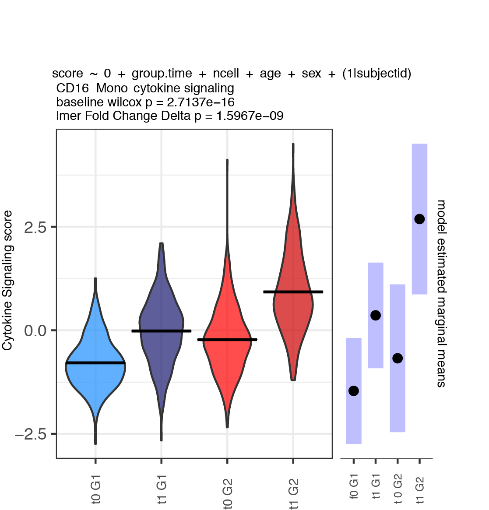

vignettes/scglmmr_singlecell.Rmd
scglmmr_singlecell.RmdCompare single cell level module score responses across groups. As in the pseudobulk vignette, fit models within each cell type adjusting for covariates using a random intercept term for each donor. Functions used in this workflow include:
WeightedCellModuleScore - score each module activity for
each cell; any method can be used here. Below we discuss relative vs
absolute scaling across cells vs within cell types for effect size
interpretation.
FitLmer - fits a linear model using lme4 notation to the
module scores. Returns a nested list of model results that can be
queried to extract effects of interest.
FitLmerContrast - as above, but specifically designed
for 2 group 2 timepoint repeated measures perturbation designs.
Automatically calculates baseline differences, treatment effect across
subjects and difference in treatment effects between groups using the emmeans
package.
A plot as shown below is generated for each module x cell type.

suppressMessages(library(tidyverse))
suppressMessages(library(Seurat))
suppressMessages(library(here))
suppressMessages(library(scglmmr))
# demonstrate using Seurat object
s = readRDS(here("singlecellobject.rds"))
# create a vector of celltypes
ct = unique(s@meta.data$celltype)
# normalize with log normalization
s = NormalizeData(s,normalization.method = 'LogNormalize',assay = 'RNA')These functions can be useful to further interrogate the pathways identified in the pseudobulk pipeline or for unbiased analysis. Here for demonstration purposes, a subset of the hallmark pathways are used.
sigs_test = hallmark[c(22, 23, 24,25,26,27)]
# format cell metadata as factors group_id is order leveled for:
md = s@meta.data %>%
filter(timepoint %in% c(0,1)) %>%
mutate(group_id = paste(group, timepoint, sep = '_')) %>%
mutate(group_id = factor(group_id, levels = c('0_0', '0_1', '1_0', '1_1'))) %>%
select(celltype, subjectid, sex , age, timepoint, group_id) %>%
mutate(age = as.numeric(age)) %>%
droplevels()If a cell type is very donor specific such that there are only cells for a couple of subjects we cant interpret the group level effects so we remove these cell types.
This can be done in multiple ways. The function below calculates the simple average. Note that for interpretability of the efects within each cluster, the score is being applied and scaled within each cell type.
# add single cell weighted module scores
# split to standardize within cell type
ct.md = split(md, f = md$celltype)
# get umi data
umi = s@assays$RNA@data[ ,rownames(md)]
# fit module scores
mod_scores = lapply(ct.md, function(x){
scglmmr::WeightedCellModuleScore(gene_matrix = umi[ ,rownames(x)],
module_list = sigs_test,
threshold = 0,
# standardize within protein celltype
cellwise_scaling = TRUE,
return_weighted = FALSE )
})
ms = bind_rows(mod_scores)
# correctly order rows after the split.
ms = ms[match(x = rownames(md), table = rownames(ms)), ]
stopifnot(all.equal(rownames(ms), rownames(md)))Specify a model using lme4 notation and fit models. Note that the LHS outcome “modulescore” should not be changed as this is adaptively applied to each module internally.
Results are formatted as a list indexed by cell type. If we want to find the effects of time on expression we can use the following code to extract out this effect as shown below using the emmeans package. This allows maximum flexibility since any effect can be extracted and custom contrast matrices can be utilized – see emmeans documentation.
# write wrapper to extract out time effect.
extract.time.effect = function(fit.list.celltype){
c_res = list()
for(u in length(fit.list.celltype)){
emm1 = tryCatch(
emmeans::emmeans(object = m1, specs = ~ timepoint , data = res, lmer.df = "asymptotic"),
error = function(e) return(NA)
)
c_res[[u]] = emm1
}
}
# now we can apply this to each cell type.
time.result = lapply(mmres , extract.time.effect)This function was written for a 2 group design (as shown in the main
readme) where subjects each have a pre and post perturbation
measurement. WE wantto compare the pertuebation effects across subjects,
and between groups and test the baseline differences. All of these
effects are extracted automatically into a simple output, and plots are
created as above.
For this function, on the RHS, + (1|subjectid) should also not be
changed. One can also specify fixed effects covariates as a vector.
f1 = 'modulescore ~ 0 + groupid + age + sex + (1|subjectid)'
# fit sc mod mixed model on ewighted module scores.
mm_res.m1 = FitLmerContrast(module_data_frame = ms,
celltype_column = 'celltype',
metadata = md,
lmer_formula = f1,
plotdatqc = TRUE,
fixed_effects = NULL,
figpath = plot_savepath)
# saveRDS(mm_res.m1,file = paste0(datapath, "mm_res.m1.rds"))Note that the effect size of specific module scores may be compared using the code below to determine which celltype has the greatest absolute effect size (epression) of a given module. Both the between and within cell type expression group level differences are likely of interest for interpretation.
ms.full = scglmmr::WeightedCellModuleScore(
gene_matrix = umi,
module_list = sigs_test,
threshold = 0,
# standardize within protein celltype
cellwise_scaling = TRUE,
return_weighted = FALSE
)
d = cbind(ms.full, md)
# absolute effect size for hallmark
f1 = as.formula(HALLMARK_HYPOXIA ~ celltype + age + sex + (1|subjecctID))
m1 = lme4::lmer(f1, data = bl)
emm1 = emmeans::emmeans(m1, specs = ~celltype)
plot(emm1)